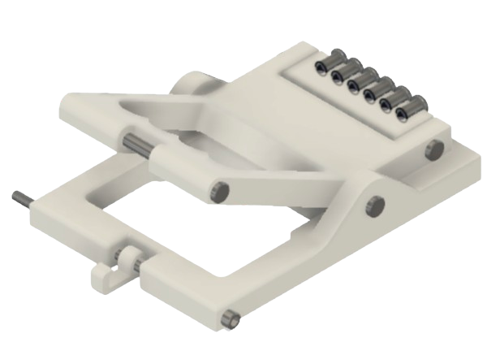
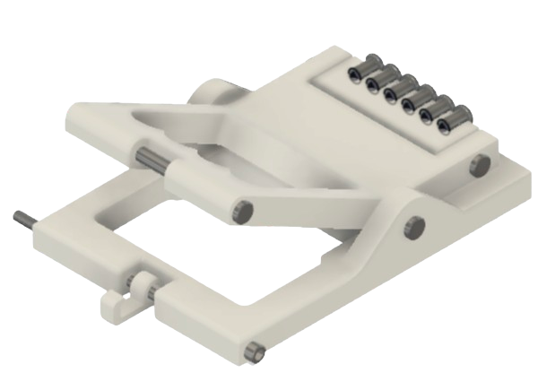

Telescoping Tube Actuator
A project that I worked on for Stanford Solar Car Project was to design a telescoping tube actuator. During the race at regular intervals, the solar car must stop for 30 minutes to allow the team to switch drivers and refuel convoy vehicles. At this time, the solar array will be hinged to point to the sun and maximize the amount of energy absorbed by the solar panels. In order to hinge the array, there will be a four-bar linkage in the nose of the car, as well as two telescoping tubes that will hold the array at a given height. For this project, I had to design a clamp for the telescoping tube that will be actuated by imparting some tension and displacement into a Bowden cable. Some requirements and specifications for the project were:
- 50mm of displacement and 50N of tension must be introduced into the 6 Bowden cables
- Must be handheld and tension must be applicable with one hand
- Ideally must weigh less than 250g
- The Bowden cable housing has a diameter of 6mm
- The pass-thru holes for the inner cables should be 3mm in diameter
- The holes to nest the end of the cable housings in should be about 7-10 mm deep
For this project, I worked on iterating through different design ideas in CAD. After each model, I would get feedback from other teammates and work to make improvements. Eventually I settled on the following design. I also had to import hardware from McMaster-Carr into my model.

 
